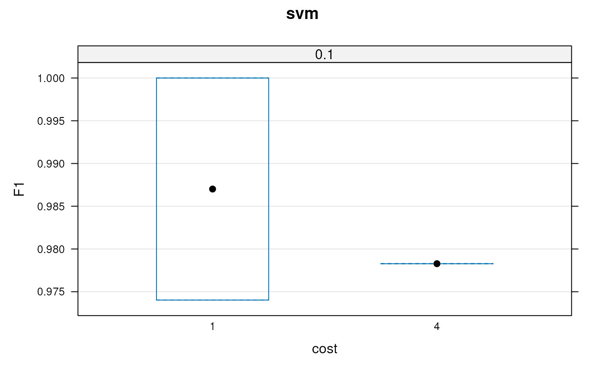

Classification using the support vector machine algorithm.
svmClassification(object, assessRes, scores = c("prediction", "all", "none"), cost, sigma, fcol = "markers", ...)
| object | An instance of class |
|---|---|
| assessRes | An instance of class
|
| scores | One of |
| cost | If |
| sigma | If |
| fcol | The feature meta-data containing marker definitions.
Default is |
| ... | Additional parameters passed to |
An instance of class "MSnSet" with
svm and svm.scores feature variables storing the
classification results and scores respectively.
Laurent Gatto
library(pRolocdata) data(dunkley2006) ## reducing parameter search space and iterations params <- svmOptimisation(dunkley2006, cost = 2^seq(-2,2,2), sigma = 10^seq(-1, 1, 1), times = 3)#> | | | 0% | |===== | 7% | |========= | 13% | |============== | 20% | |=================== | 27% | |======================= | 33% | |============================ | 40% | |================================= | 47% | |===================================== | 53% | |========================================== | 60% | |=============================================== | 67% | |=================================================== | 73% | |======================================================== | 80% | |============================================================= | 87% | |================================================================= | 93% | |======================================================================| 100%params#> Object of class "GenRegRes" #> Algorithm: svm #> Hyper-parameters: #> cost: 0.25 1 4 #> sigma: 0.1 1 10 #> Design: #> Replication: 3 x 5-fold X-validation #> Partitioning: 0.2/0.8 (test/train) #> Results #> macro F1: #> Min. 1st Qu. Median Mean 3rd Qu. Max. #> 0.9788 0.9894 1.0000 0.9929 1.0000 1.0000 #> best sigma: 0.1 #> best cost: 1 4#> 1 4 #> 0.1 1 1#> sigma cost #> 0.1 1.0#> ans #> ER lumen ER membrane Golgi Mitochondrion Plastid #> 16 178 99 102 52 #> PM Ribosome TGN vacuole #> 134 55 18 35#> MSnSet (storageMode: lockedEnvironment) #> assayData: 689 features, 16 samples #> element names: exprs #> protocolData: none #> phenoData #> sampleNames: M1F1A M1F4A ... M2F11B (16 total) #> varLabels: membrane.prep fraction replicate #> varMetadata: labelDescription #> featureData #> featureNames: AT1G09210 AT1G21750 ... AT4G39080 (689 total) #> fvarLabels: assigned evidence ... svm.pred (11 total) #> fvarMetadata: labelDescription #> experimentData: use 'experimentData(object)' #> pubMedIds: 16618929 #> Annotation: #> - - - Processing information - - - #> Loaded on Thu Jul 16 22:53:08 2015. #> Normalised to sum of intensities. #> Added markers from 'mrk' marker vector. Thu Jul 16 22:53:08 2015 #> Performed svm prediction (sigma=0.1 cost=1) Sat May 1 11:59:52 2021 #> Added svm predictions according to global threshold = 0 Sat May 1 11:59:52 2021 #> MSnbase version: 1.17.12#> ans #> ER lumen ER membrane Golgi Mitochondrion Plastid #> 14 146 71 93 43 #> PM Ribosome TGN unknown vacuole #> 109 27 13 145 28#> MSnSet (storageMode: lockedEnvironment) #> assayData: 689 features, 16 samples #> element names: exprs #> protocolData: none #> phenoData #> sampleNames: M1F1A M1F4A ... M2F11B (16 total) #> varLabels: membrane.prep fraction replicate #> varMetadata: labelDescription #> featureData #> featureNames: AT1G09210 AT1G21750 ... AT4G39080 (689 total) #> fvarLabels: assigned evidence ... svm.pred (11 total) #> fvarMetadata: labelDescription #> experimentData: use 'experimentData(object)' #> pubMedIds: 16618929 #> Annotation: #> - - - Processing information - - - #> Loaded on Thu Jul 16 22:53:08 2015. #> Normalised to sum of intensities. #> Added markers from 'mrk' marker vector. Thu Jul 16 22:53:08 2015 #> Performed svm prediction (sigma=0.1 cost=1) Sat May 1 11:59:52 2021 #> Added svm predictions according to global threshold = 0.75 Sat May 1 11:59:52 2021 #> MSnbase version: 1.17.12